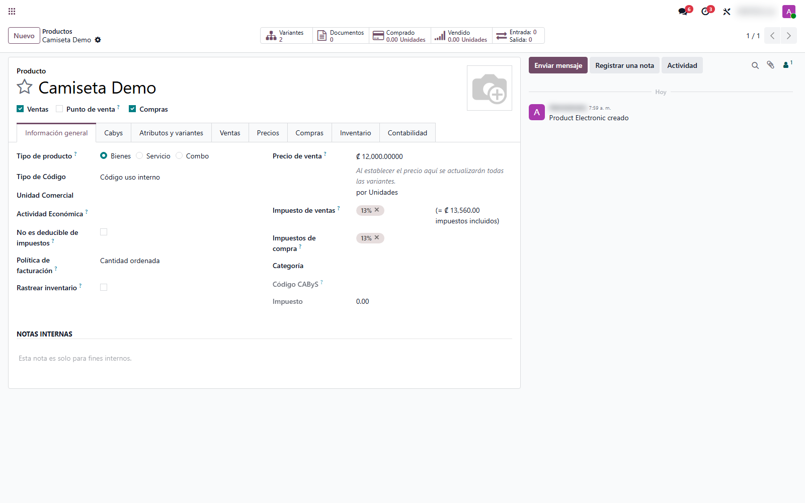
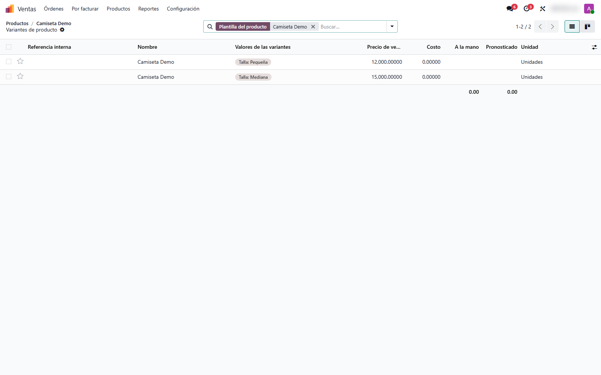
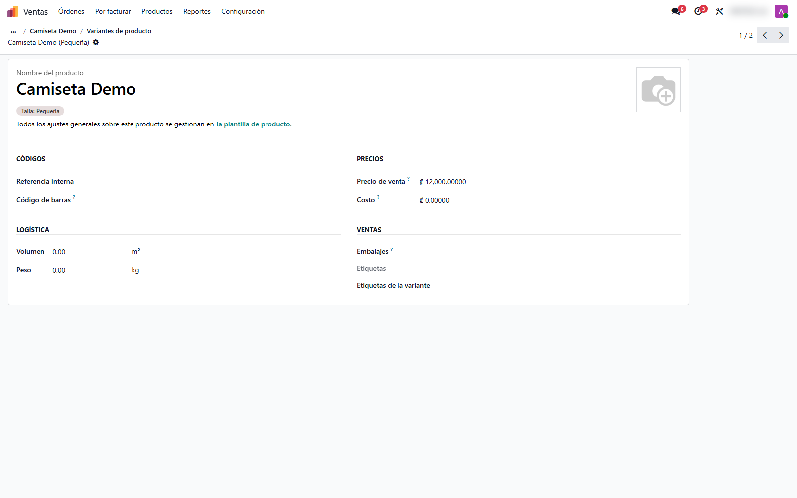

Precio de Venta por Variante
Asigná un precio de venta fijo e independiente a cada variante de un producto. Ideal para catálogos donde la talla, el color o la presentación cambian el precio sin seguir una regla lineal.
Capturas del proyecto
01 / 05




Cuando cada variante necesita su propio precio
En un catálogo con variantes —tallas, colores, presentaciones— el precio no siempre sigue una fórmula. Odoo estándar obliga a un precio base en el producto más recargos por atributo, lo que se vuelve incómodo cuando los precios no son lineales.
Este módulo permite definir el precio de venta directamente en cada variante. Ese precio se respeta en cotizaciones, ventas y listas de precios, y los recargos por atributo quedan ocultos para evitar confusiones.
Funcionalidades clave
-
Precio fijo por variante
Cada variante con su propio precio de venta editable.
-
Lista de variantes clara
Revisá y ajustá el precio de cada talla o presentación en un solo lugar.
-
Propagación desde la plantilla
Fijá un precio común para todas las variantes con un solo cambio.
-
Se respeta en ventas
El precio de la variante es el que toma cada cotización y orden de venta.
Tecnología detrás del producto
¿Tu catálogo necesita precios distintos por variante?
Adapto el manejo de precios de tus productos con variantes a tu política comercial.